Фабрика
цвета
Преврати знакомого робота в садовника! Собери антенну из разных форм, вытяни полое кашпо и посади цветы. А потом объедини все детали своей командой красок.
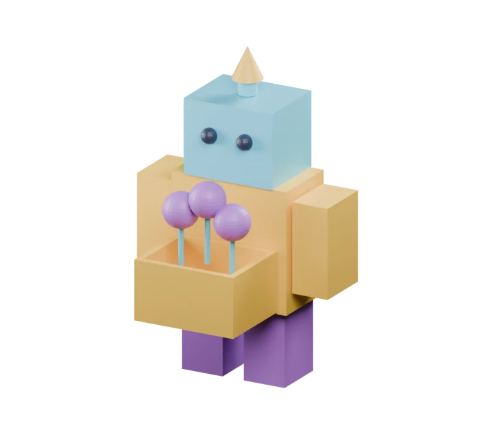
Одна краска — много деталей
Материал — как баночка краски с именем. Одну баночку можно дать нескольким предметам. Если поменять её цвет, все эти предметы перекрасятся вместе. Их форма останется прежней. Мы уже пробовали цвет в первой неделе; теперь научимся управлять общей краской и собирать палитру.
Угадай: тело, рука и кашпо используют SUN. Что перекрасится, если изменить SUN у тела?
Робот меняет профессию
Твой робот уже умеет стоять. Теперь он станет садовником с антенной, кашпо и цветами. Начнём со знакомых форм и первой краски.
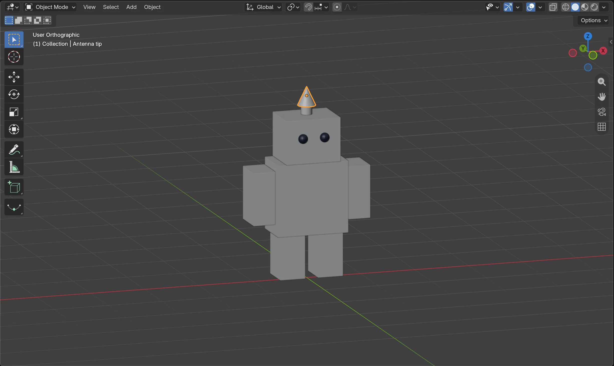
Начало новой профессии
Робот ещё без кашпо. На голове — цилиндр и конус, как знакомые детали ракеты.
Открой робота и сохрани новую версию
Со взрослым выбери File → Open и открой робота из недели 1. Сразу File → Save As — сохрани colour-lab.blend, чтобы оставить исходную работу отдельно. Теперь это мастерская робота-садовника.
Покажи мне: новая версия робота
Снимки рабочего окна и виды модели из Blender 5.2. Нажми на картинку, чтобы рассмотреть её крупнее. Твоя модель может выглядеть иначе.
Сохрани цветную версию
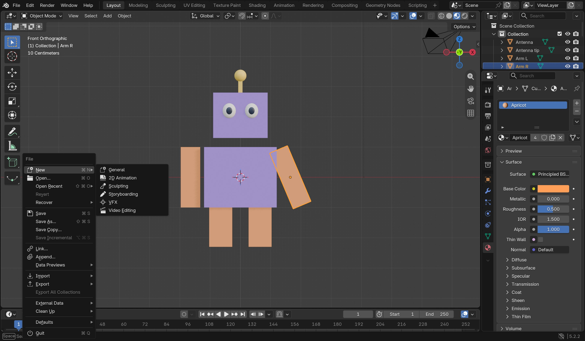
В меню File выбери Save As для новой копии colour-lab.blend. Потом используй Save. Для продолжения — File → Open.
Проверь: Файл с цветной моделью сохранён, исходная работа осталась отдельно.
Собери антенну из двух форм
В Object Mode добавь Add → Mesh → Cylinder. Уменьши через S, сплющи через S, Z и поставь на голову через G по осям. Это основание. Добавь Add → Mesh → Cone, уменьши и поставь сверху. Вспомни ракету: цилиндр ровный, конус сужается. Точные размеры не нужны.
Покажи мне: цилиндр и конус вместо ещё одного кубика
Снимки рабочего окна и виды модели из Blender 5.2. Нажми на картинку, чтобы рассмотреть её крупнее. Твоя модель может выглядеть иначе.
Открой баночку SUN
Выбери тело. Справа открой Material Properties — красный шарик. Нажми New, если материала нет; если есть, используй его. Назови материал SUN и нажми цветной прямоугольник Base Color. Выбери главный цвет робота.
Покажи мне: материал и цвет
Снимки рабочего окна и виды модели из Blender 5.2. Нажми на картинку, чтобы рассмотреть её крупнее. Твоя модель может выглядеть иначе.
Новая баночка краски

Выбери тело робота в Object Mode. Справа нажми красный шарик Material Properties, затем New.
Проверь: У выбранного предмета появился материал.
Имя и цвет материала

Назови материал SUN. Нажми цветной прямоугольник Base Color и выбери жёлтый. Щёлкни вне окна цвета, чтобы закрыть его.
Проверь: В строке материала написано SUN, а Base Color стал жёлтым.
Покажи краску в большом окне
Щёлкни вне окна выбора цвета. Вверху справа большого окна нажми третий шарик — Material Preview. Подожди несколько секунд. Мы пока окрасили только тело; остальные детали примерят краски позже.
Покажи мне: показ материалов
Снимки рабочего окна и виды модели из Blender 5.2. Нажми на картинку, чтобы рассмотреть её крупнее. Твоя модель может выглядеть иначе.
Включи показ материалов
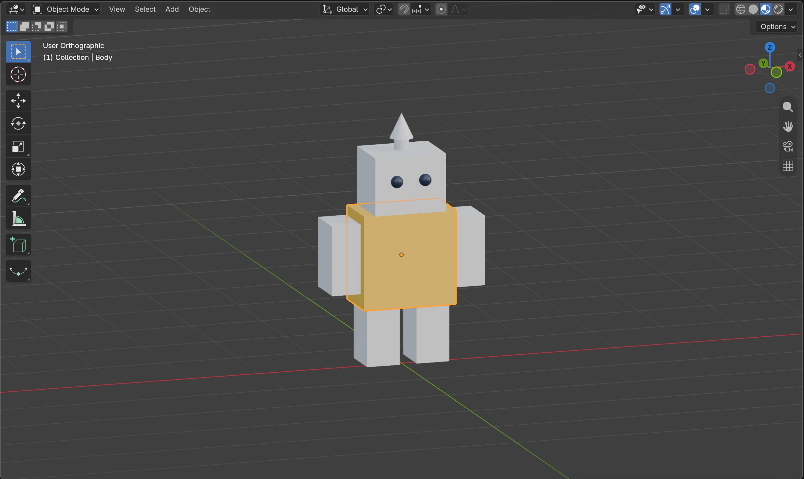
Вверху справа большого окна нажми третий шарик — Material Preview. Подожди, пока Blender подготовит свет.
Проверь: Тело стало жёлтым. Белые части ещё ждут своей краски.


Нет файла робота?
Собери тело, голову и одну руку из кубиков через знакомые Add → Mesh → Cube, S и G. Вторую руку получи через Shift+D и G, X; ноги — тем же способом. Вспомнить сборку робота по картинкам → Затем добавь новую антенну. Взрослый может подготовить знакомую основу.
Что у меня получилось
Закрой баночки — сохрани работу
Если новая версия уже сохранена, выбери File → Save. Если ещё нет, вместе со взрослым открой File → Save As, выбери свою папку и сохрани новую копию, чтобы оставить исходную модель. Назови файл colour-lab.blend. Нажми Save As в окне сохранения. Можно закончить на сегодня!
Когда вернёшься, открой File → Open и выбери colour-lab.blend. Отметки на сайте сохраняют твои открытия, а файл Blender — саму модель.
Покажи мне: сохранить и продолжить завтра
Снимки рабочего окна и виды модели из Blender 5.2. Нажми на картинку, чтобы рассмотреть её крупнее. Твоя модель может выглядеть иначе.
Кашпо для общего цвета
Сделаем перед роботом небольшое открытое кашпо. Это знакомая полость сундука, но теперь она нужна для цветов. Затем проверим новую связь материалов.
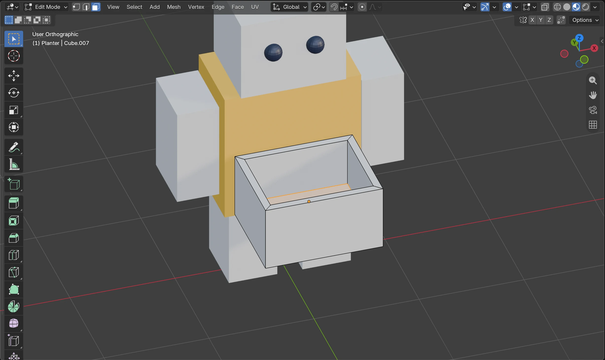
Настоящее место для цветов
На снимке выбрано дно внутри кашпо. Цветы появятся в следующей миссии.
Поставь невысокий куб перед телом
В Object Mode добавь Cube. Через S по осям сделай невысокую коробочку. Через G поставь перед телом примерно на уровне живота. Пусть верх будет хорошо виден; кашпо не должно прятаться внутри робота.
Покажи мне: отдельная форма кашпо
Снимки рабочего окна и виды модели из Blender 5.2. Нажми на картинку, чтобы рассмотреть её крупнее. Твоя модель может выглядеть иначе.
Основа кашпо перед роботом
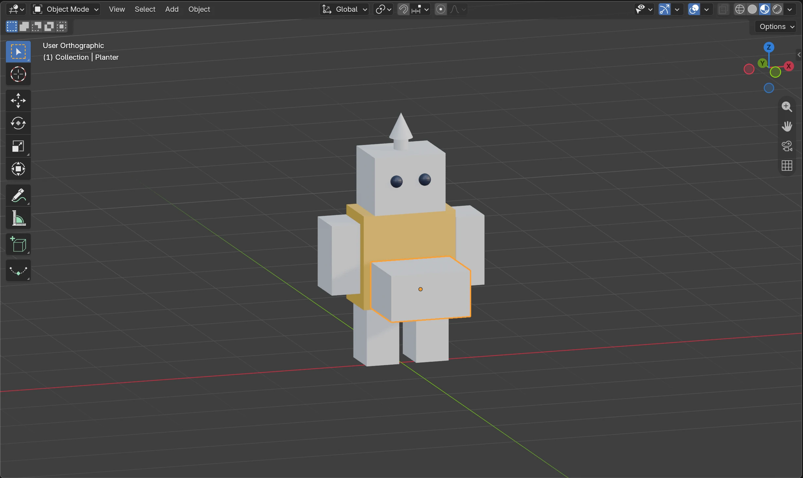
Добавь Cube в Object Mode. Сделай его невысокой коробочкой через S по осям и поставь перед телом через G. Верх должен быть виден.
Проверь: Это отдельный куб, а не часть тела.
Выбери верхнюю грань
Наведи мышь на большое окно. Tab — Edit Mode, 3 в верхнем ряду — выбор граней, Alt+A — снять выделение. Поверни вид сверху и щёлкни только по верхней грани.
Покажи мне: выбрана одна грань
Снимки рабочего окна и виды модели из Blender 5.2. Нажми на картинку, чтобы рассмотреть её крупнее. Твоя модель может выглядеть иначе.
Оставь бортик и вытяни середину вниз
Нажми I, чуть потяни к середине и щёлкни: появился бортик. Затем E — опусти выбранную середину внутрь. Остановись до дна и щёлкни. Получилось открытое кашпо! Вернись в Object Mode через Tab. Если полость вышла слишком глубокой, Ctrl+Z и повтори E короче.
Покажи мне: Inset и Extrude открывают кашпо
Снимки рабочего окна и виды модели из Blender 5.2. Нажми на картинку, чтобы рассмотреть её крупнее. Твоя модель может выглядеть иначе.
Inset: оставь тонкий бортик
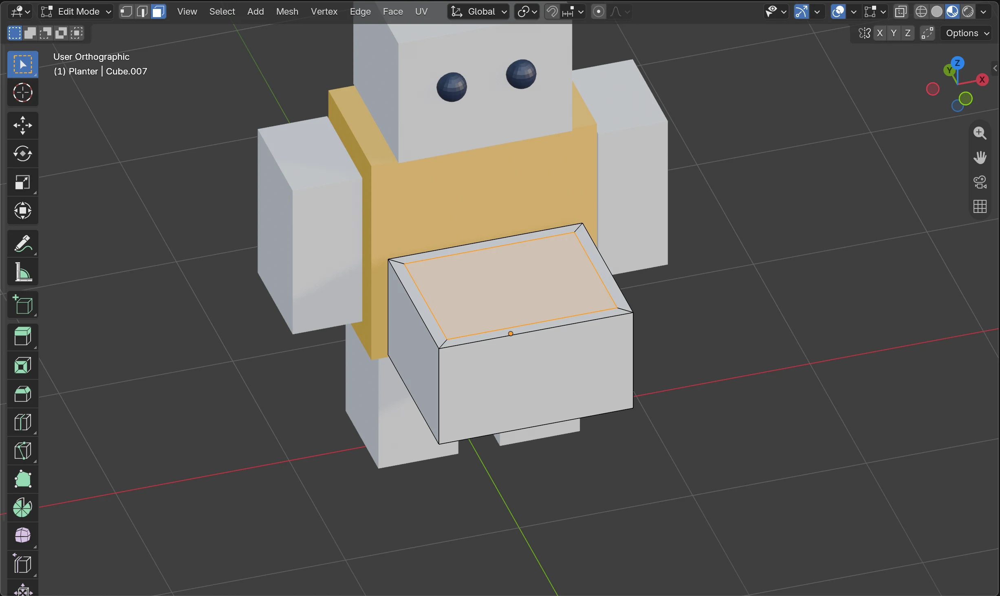
Нажми I, немного потяни мышь к середине и щёлкни. Не делай бортик слишком толстым.
Проверь: На верхней грани появилась рамка, середина остаётся выбранной.
Extrude: место для цветов
Нажми E, опусти выбранную середину внутрь и щёлкни. Остановись до дна. На снимке Edit Mode показывает выбранное дно внутри полости. Затем Tab для Object Mode.
Проверь: У кашпо есть бортик, стенки и дно. Это тот же приём, что у сундука.
Поделись готовой краской
Выбери кашпо. В Material Properties открой список материалов маленьким шариком со стрелкой слева от New или имени. Выбери готовый SUN, не New. Так же дай SUN одной руке. Теперь три отдельных предмета используют одну баночку.
Покажи мне: один SUN на трёх предметах
Снимки рабочего окна и виды модели из Blender 5.2. Нажми на картинку, чтобы рассмотреть её крупнее. Твоя модель может выглядеть иначе.
Возьми готовую краску
Выбери руку или кашпо. Слева от имени материала открой список маленьким шариком со стрелкой и выбери готовый SUN. На снимке число 3 показывает: эту краску используют тело, рука и кашпо.
Проверь: Тело, рука и открытое кашпо используют общий SUN.
Три детали — одна краска
Сравни тело, руку и открытое кашпо: все используют SUN. Остальные детали пока белые.
Проверь: Жёлтыми стали три отдельных предмета.
Предскажи и проверь
Выбери тело. Угадай, что перекрасится, если изменить его Base Color. Попробуй другой цвет SUN и посмотри на руку и кашпо. Верни любимый цвет через Ctrl+Z или выбери его снова. Полость кашпо осталась на месте!
Покажи мне: общая краска меняет цвет, а не форму
Снимки рабочего окна и виды модели из Blender 5.2. Нажми на картинку, чтобы рассмотреть её крупнее. Твоя модель может выглядеть иначе.
Перекрась сразу обе части
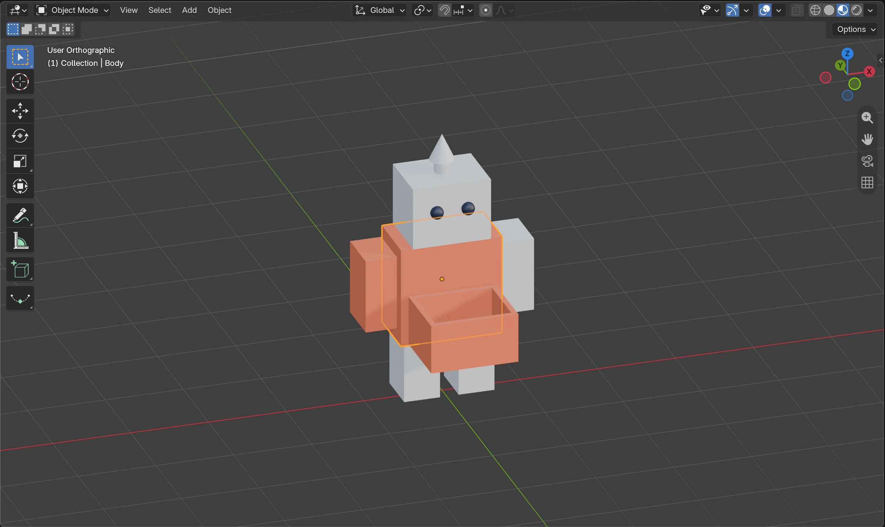
Выбери тело и измени Base Color у SUN. Рука и кашпо перекрасятся вместе с ним. Верни любимый цвет через Ctrl+Z.
Проверь: Одна правка меняет три предмета. Полость кашпо и форма робота остаются прежними.
Три детали — одна краска
Сравни тело, руку и открытое кашпо: все используют SUN. Остальные детали пока белые.
Проверь: Жёлтыми стали три отдельных предмета.


Объясни: чем отличается изменение формы через E от изменения материала через Base Color?
Что у меня получилось
Закрой баночки — сохрани работу
Перед перерывом выбери File → Save. Если файл ещё не назван, выбери File → Save As и сохрани colour-lab.blend в своей папке. Можно закончить на сегодня!
Когда вернёшься, открой File → Open и выбери colour-lab.blend. Отметки на сайте сохраняют твои открытия, а файл Blender — саму модель.
Покажи мне: сохранить и продолжить завтра
Снимки рабочего окна и виды модели из Blender 5.2. Нажми на картинку, чтобы рассмотреть её крупнее. Твоя модель может выглядеть иначе.
Посади цветовую команду
Теперь соединим цилиндр и шар, вспомним копирование города и соберём всю модель в палитру из двух или трёх главных цветов.
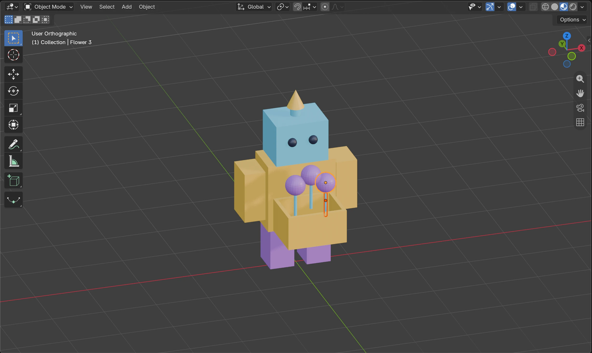
Солнечный садовник
Кубы, цилиндры, конус и шары объединены тремя главными красками. Твоя палитра может отличаться.
Сделай один цветок из двух форм
В Object Mode добавь Cylinder, уменьши его и растяни по Z: тонкий стебель. Поставь в кашпо через G. Добавь UV Sphere, уменьши и подними над стеблем. Шар — круглый фантастический цветок. Низ стебля должен уйти внутрь кашпо.
Покажи мне: цилиндр-стебель и шар-цветок
Снимки рабочего окна и виды модели из Blender 5.2. Нажми на картинку, чтобы рассмотреть её крупнее. Твоя модель может выглядеть иначе.
Цилиндр-стебель и шар-цветок
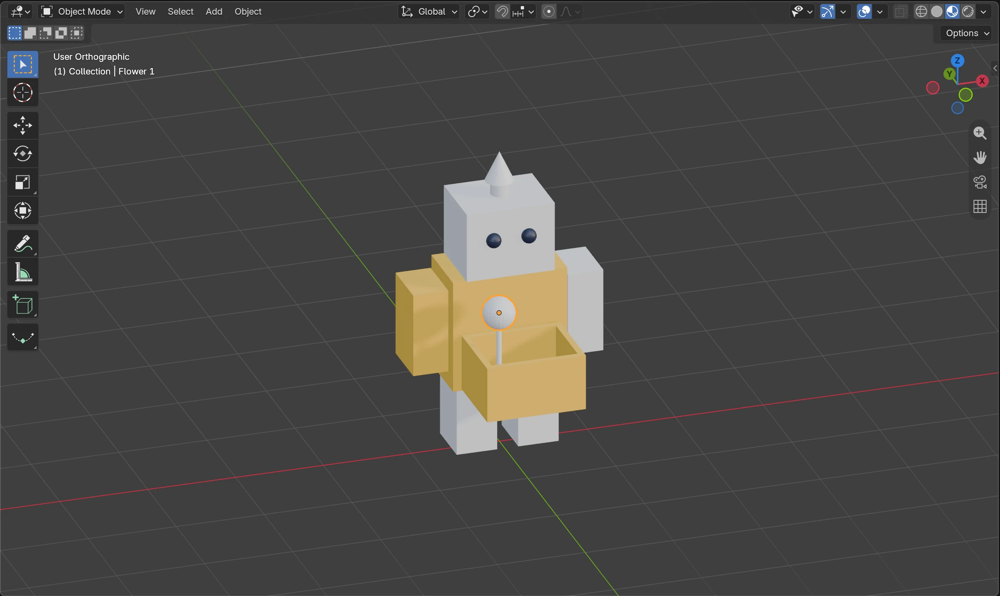
В Object Mode добавь тонкий Cylinder, поставь его в полость через G. Добавь UV Sphere, уменьши через S и поставь над стеблем.
Проверь: Стебель выходит из кашпо, сверху стоит круглый цветок.
Подбери две новые краски
Выбери голову. Создай New → SKY и выбери цвет Base Color. Если голова уже использует общий SUN, сначала сделай независимую копию по подсказке ниже. Дай стеблю готовый SKY. Для шара-цветка создай New → BERRY — третий цвет. Можно оставить два главных цвета и дать шару SUN.
Покажи мне: новый материал и повторное использование
Снимки рабочего окна и виды модели из Blender 5.2. Нажми на картинку, чтобы рассмотреть её крупнее. Твоя модель может выглядеть иначе.
Ещё одна баночка: SKY
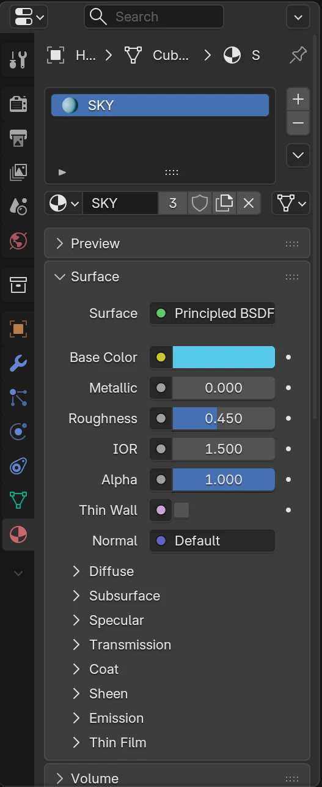
Выбери голову, создай New, назови SKY и выбери голубой Base Color. Если материал уже есть, попроси взрослого помочь сделать отдельную копию.
Проверь: У головы свой материал SKY.
Возьми готовую краску
Выбери руку или кашпо. Слева от имени материала открой список маленьким шариком со стрелкой и выбери готовый SUN. На снимке число 3 показывает: эту краску используют тело, рука и кашпо.
Проверь: Тело, рука и открытое кашпо используют общий SUN.
Скопируй цветок целиком
Выбери стебель, затем, удерживая Shift, щёлкни по шару. Оба должны быть выделены. Shift+D, затем X — передвинь пару вбок и щёлкни. G, Z чуть измени высоту копии, оставив стебель в кашпо. Вспомни город: копируем и меняем! Двух цветков достаточно, третий цветок — по желанию.
Покажи мне: копия стебля вместе с шаром
Снимки рабочего окна и виды модели из Blender 5.2. Нажми на картинку, чтобы рассмотреть её крупнее. Твоя модель может выглядеть иначе.
Цилиндр-стебель и шар-цветок
В Object Mode добавь тонкий Cylinder, поставь его в полость через G. Добавь UV Sphere, уменьши через S и поставь над стеблем.
Проверь: Стебель выходит из кашпо, сверху стоит круглый цветок.
Копии с разной высотой
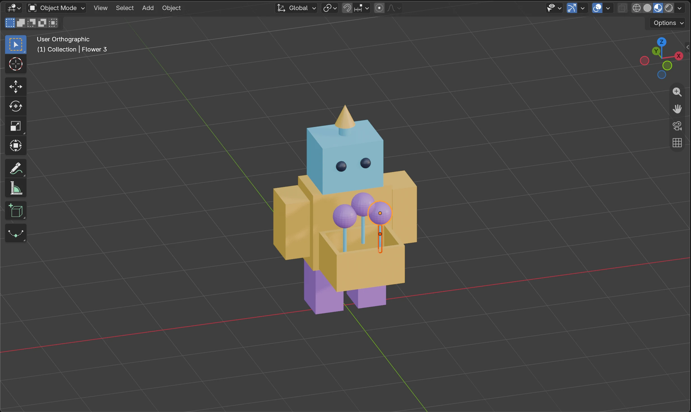
Выбери стебель, удерживая Shift добавь к выделению шар. Shift+D, затем X — передвинь пару вбок, щёлкни. G, Z изменит высоту копии. Повтори по желанию.
Проверь: У двух или трёх цветов одинаковая основа, но разная высота.
Объедини разные формы палитрой
Для второй руки, кашпо и кончика антенны выбери готовый SUN. Для основания антенны и стеблей — SKY. Для ног и цветочных шаров — BERRY, если используешь третий цвет. Копии цветка используют те же материалы, поэтому изменение BERRY перекрасит все связанные шары. Глаза можно оставить тёмными.
Покажи мне: одна палитра для всей модели
Снимки рабочего окна и виды модели из Blender 5.2. Нажми на картинку, чтобы рассмотреть её крупнее. Твоя модель может выглядеть иначе.


Со взрослым: хочу перекрасить только одну деталь
Выбери деталь с общим материалом. Справа от имени материала нажми число пользователей (например, 3): Blender сделает отдельную копию. Назови её PEACH и только потом измени Base Color. Остальные детали сохранят старую краску. Если числа нет, материал уже используется отдельно.
Покажи мне: общая краска и отдельная копия
Снимки рабочего окна и виды модели из Blender 5.2. Нажми на картинку, чтобы рассмотреть её крупнее. Твоя модель может выглядеть иначе.
Число пользователей: сделай отдельную копию
Нажми число 3 справа от SUN: выбранная рука получит отдельную копию материала. Назови её PEACH и меняй цвет. Тело и кашпо сохранят свой SUN.
Проверь: Копия имеет своё имя и больше не перекрашивает тело.
Отдельная копия краски

Это необязательный опыт со взрослым. На руке с SUN нажми число пользователей справа от имени материала, затем назови копию PEACH и измени её Base Color.
Проверь: У руки отдельная краска PEACH; SUN у тела остаётся прежним.
Одна рука другого цвета
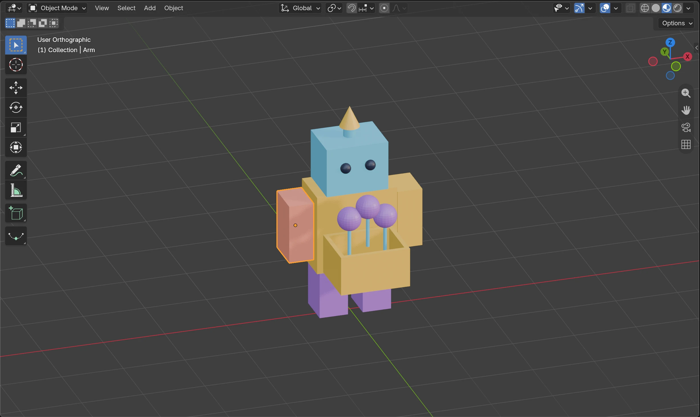
После копирования перекрашивается только выбранная рука. В основной палитре можно снова выбрать SUN, чтобы вернуться к трём цветам.
Проверь: Тело не перекрасилось вместе с рукой.

Для основной палитры можешь снова выбрать SUN в списке материалов.
Что у меня получилось
Закрой баночки — сохрани работу
Перед перерывом выбери File → Save. Если файл ещё не назван, выбери File → Save As и сохрани colour-lab.blend в своей папке. Можно закончить на сегодня!
Когда вернёшься, открой File → Open и выбери colour-lab.blend. Отметки на сайте сохраняют твои открытия, а файл Blender — саму модель.
Покажи мне: сохранить и продолжить завтра
Снимки рабочего окна и виды модели из Blender 5.2. Нажми на картинку, чтобы рассмотреть её крупнее. Твоя модель может выглядеть иначе.
Сделай садовника узнаваемым
У тебя уже сложная модель. Цвет помогает заметить её части: лицо, кашпо, цветы. Проверим две версии палитры и выберем любимую.
Профессия читается по форме и цвету
Антенна, полое кашпо и цветы рассказывают историю робота. Палитра связывает их между собой.
Примерь два настроения
Выбери тело и поменяй SUN: например, тёплый жёлтый на холодный голубой. Заметь, что рука и кашпо тоже меняются. Затем измени BERRY у одного цветка и посмотри на его копии. Какой сад получился — солнечный или космический? Выбери любимую версию. Не нужно сохранять оба варианта.
Покажи мне: цвет как решение для всей модели
Снимки рабочего окна и виды модели из Blender 5.2. Нажми на картинку, чтобы рассмотреть её крупнее. Твоя модель может выглядеть иначе.
Возьми готовую краску
Выбери руку или кашпо. Слева от имени материала открой список маленьким шариком со стрелкой и выбери готовый SUN. На снимке число 3 показывает: эту краску используют тело, рука и кашпо.
Проверь: Тело, рука и открытое кашпо используют общий SUN.
Перекрась сразу обе части
Выбери тело и измени Base Color у SUN. Рука и кашпо перекрасятся вместе с ним. Верни любимый цвет через Ctrl+Z.
Проверь: Одна правка меняет три предмета. Полость кашпо и форма робота остаются прежними.
Палитра из трёх цветов
SUN объединяет тело, руки, кончик антенны и кашпо. SKY — голову, основу антенны и стебли; BERRY — ноги и цветочные шары. Тёмные глаза можно оставить.
Проверь: Одна палитра связывает разные формы в одного робота-садовника.
Проверь, что видно с разных сторон
Поверни вид знакомым способом. Видно ли бортик и цветы? Голова отличается от тела? Если две важные детали сливаются, дай одной другой готовый материал через список. Не меняй общий Base Color, если хочешь разделить только одну деталь; со взрослым можно сделать копию материала.
Покажи мне: разные роли цветов
Снимки рабочего окна и виды модели из Blender 5.2. Нажми на картинку, чтобы рассмотреть её крупнее. Твоя модель может выглядеть иначе.
Ещё одна баночка: SKY
Выбери голову, создай New, назови SKY и выбери голубой Base Color. Если материал уже есть, попроси взрослого помочь сделать отдельную копию.
Проверь: У головы свой материал SKY.
Палитра из трёх цветов
SUN объединяет тело, руки, кончик антенны и кашпо. SKY — голову, основу антенны и стебли; BERRY — ноги и цветочные шары. Тёмные глаза можно оставить.
Проверь: Одна палитра связывает разные формы в одного робота-садовника.
Объясни своё решение
Покажи садовника и назови знакомые инструменты: S/G для форм, I/E для полости, Shift+D для цветов. Затем закончи: «Общий материал удобен, потому что…» Сохрани colour-lab.blend через File → Save.
Покажи мне: готовая модель и новое открытие
Снимки рабочего окна и виды модели из Blender 5.2. Нажми на картинку, чтобы рассмотреть её крупнее. Твоя модель может выглядеть иначе.
Сохрани цветную версию
В меню File выбери Save As для новой копии colour-lab.blend. Потом используй Save. Для продолжения — File → Open.
Проверь: Файл с цветной моделью сохранён, исходная работа осталась отдельно.
Палитра из трёх цветов
SUN объединяет тело, руки, кончик антенны и кашпо. SKY — голову, основу антенны и стебли; BERRY — ноги и цветочные шары. Тёмные глаза можно оставить.
Проверь: Одна палитра связывает разные формы в одного робота-садовника.
Помнишь Mirror? Сделай роботу пару круглых перчаток
Это дополнительная задача после основной палитры. В Object Mode поставь 3D-курсор в центр сетки: со взрослым Shift+S → Cursor to World Origin. Добавь UV Sphere. Сразу Tab в Edit Mode, A — всё выделено. Уменьши форму через S, затем G, X и G, Z поставь её у конца одной руки. При необходимости G, Y подвинет её вперёд. Всё перемещение делай в Edit Mode, чтобы origin остался в центре. Вернись через Tab и открой Modifiers → Add Modifier → Generate → Mirror. Оставь X включённой. Дай перчаткам готовый BERRY.
Покажи мне: одна сфера, две перчатки
Снимки рабочего окна и виды модели из Blender 5.2. Нажми на картинку, чтобы рассмотреть её крупнее. Твоя модель может выглядеть иначе.
Бонус: две перчатки через Mirror
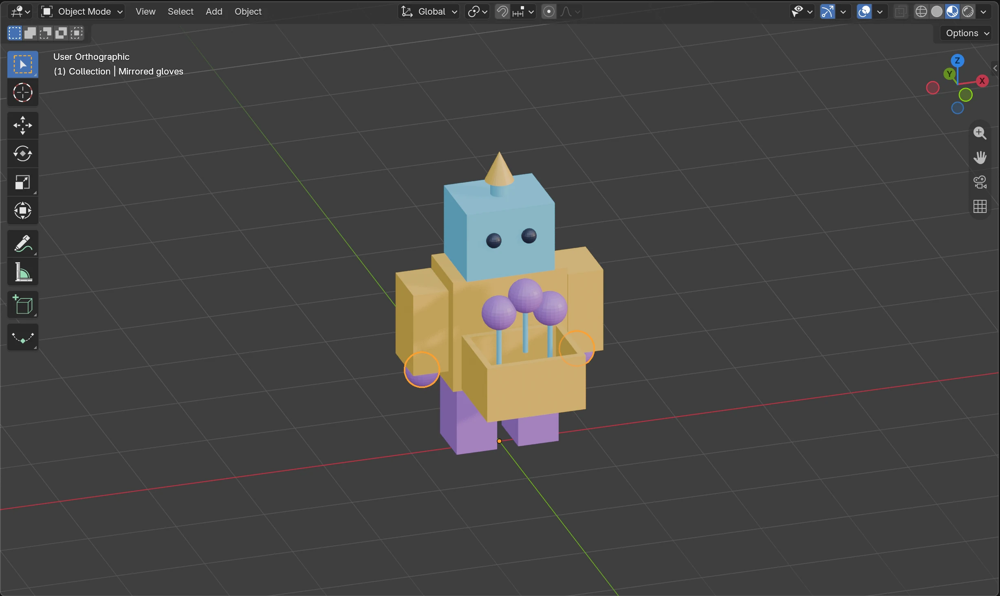
Сфера добавлена в центре, её форма уменьшена и передвинута к одной руке в Edit Mode. В Object Mode Mirror по X показал перчатку на второй руке.
Проверь: Маленькая оранжевая точка в центре сетки — origin. Одна построенная перчатка дала пару.
Знакомое зеркало по X
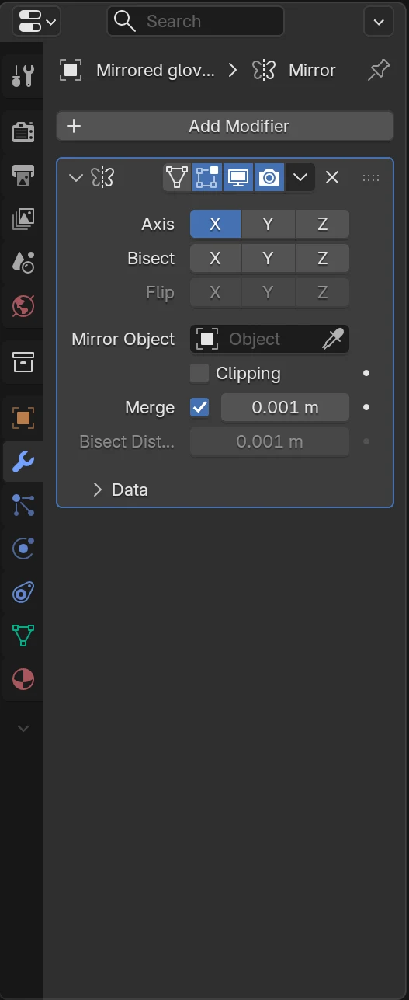
У Modifiers → Mirror включена X. Apply не нужен. Для материала перчаток можно выбрать готовый BERRY.
Проверь: Обе перчатки имеют одинаковую форму и общую краску.


Как у самолёта из недели 5, изменение одной формы меняет отражение. Apply не нужен. Вспомнить Edit Mode и центр зеркала →
Бонус со взрослым: блестит или матовое?
Выбери голову и найди Roughness в Surface. Сравни 0.08 и 0.85. Маленькое число даёт резкие блики, большое — мягкие. Поверни вид в Material Preview, чтобы заметить свет. Metallic оставь как есть. Общая поверхность меняется у всех деталей с этим материалом.
Покажи мне: где Roughness и как меняется блик
Снимки рабочего окна и виды модели из Blender 5.2. Нажми на картинку, чтобы рассмотреть её крупнее. Твоя модель может выглядеть иначе.
Секретная ручка Roughness
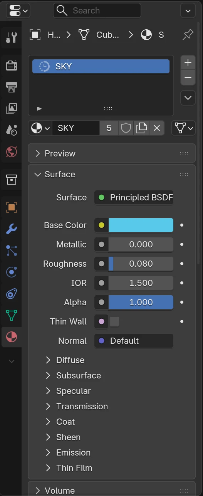
Необязательный опыт: выбери голову и найди Roughness в Surface. Маленькое число даёт более резкие блики, большое — более мягкие. Metallic оставь без изменений.
Проверь: Ты нашёл параметр поверхности, а не формы.
Более блестящая голова
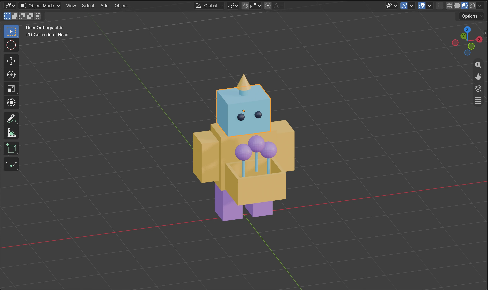
У SKY поставь Roughness около 0.08. Поверни вид, чтобы заметить отражение света.
Проверь: На голове виден более резкий блик; цвет тот же.
Более матовая голова
Поставь Roughness около 0.85 и сравни с предыдущим кадром. На плоских деталях эффект может быть слабым — поверни вид.
Проверь: Блик стал мягче. Голова не поменяла форму.


Выбери понравившийся вариант и сохрани ещё раз.
Что у меня получилось
Закрой баночки — сохрани работу
Перед перерывом выбери File → Save. Если файл ещё не назван, выбери File → Save As и сохрани colour-lab.blend в своей папке. Можно закончить на сегодня!
Когда вернёшься, открой File → Open и выбери colour-lab.blend. Отметки на сайте сохраняют твои открытия, а файл Blender — саму модель.
Покажи мне: сохранить и продолжить завтра
Снимки рабочего окна и виды модели из Blender 5.2. Нажми на картинку, чтобы рассмотреть её крупнее. Твоя модель может выглядеть иначе.
Сад цветёт, робот улыбается!
Ты соединил разные формы, сделал полость, повторил копирование и научился управлять общими материалами. В следующей неделе придумаем наклейку для героя.
На карту приключений →Для взрослых: подготовка и помощь
Шестая неделя повышает сложность проекта, сохраняя одно новое понятие — повторное использование материала. Ребёнок соединяет навыки недели 1 (сборка робота, S/G), недели 2 (цилиндр и конус), недели 3 (Shift+D) и недели 4 (одна грань, Inset/Extrude). Mirror из недели 5 возвращается как дополнительное испытание. Основная задача — робот-садовник с антенной, полым кашпо и двумя цветками, объединённый палитрой из 2–3 главных материалов.
Темп и подготовка
- Четыре встречи по 15–25 минут с перерывами. Первую начинаем со знакомого робота и простой антенны. Самые длинные — вторая и третья: кашпо можно сохранить после Extrude, а к цветам вернуться на следующий день. В 6–7 лет взрослый помогает выделять грани, вводить имена и находить панели; ребёнок выбирает формы и цвета, предсказывает результат.
- Сразу Save As в colour-lab.blend. Не объединяйте модель в один mesh: для материала нужны отдельные объекты. Если прежнего файла нет, вместе подготовьте знакомую основу робота из кубов. Точные размеры, Bevel и Apply Scale не нужны; неидеальная ширина бортика допустима.
- Кашпо — отдельный невысокий куб перед телом, со свободным местом для цветов. Выбираем только верхнюю грань, I делает бортик, E опускает середину до сохранённого дна. Не требуется Boolean, назначение материалов граням или построение новой сложной топологии.
- Material Properties → список слева от имени выбирает готовый материал. New создаёт другой материал. Число пользователей справа делает независимую копию. После обычного Shift+D отдельные копии цветов продолжают использовать общие материалы — это часть опыта. Глаза могут остаться тёмными вне основной палитры.
- Материалы задаются целым предметам в Object Mode; Material Preview показывает цвет. Снимки настоящего Blender 5.2.2 сделаны в отдельной сцене. Угол камеры, формы и имена старого робота могут отличаться; не требуйте точного совпадения. Снимки ранних этапов показывают формы без будущей отделки.
- Mirror-перчатки, третий цветок, отдельная копия краски и Roughness необязательны. Для Mirror сначала оставьте курсор и origin в центре, а сферу уменьшайте и двигайте в Edit Mode; затем Mirror по X. Не добавляйте сразу UV, текстуры, узлы или рендер.
Что считать успехом
Ребёнок повторил работу с разными формами и полостью, скопировал цветок, распределил 2–3 главных материала, объяснил совместное перекрашивание и сохранил модель. Важны выбор и понимание, а не число деталей.